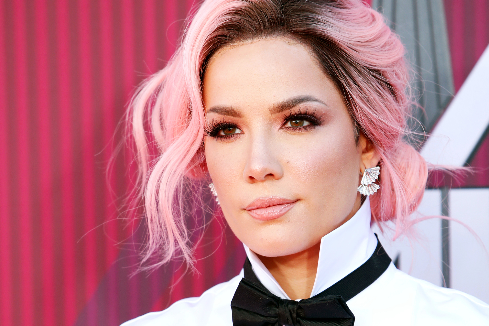
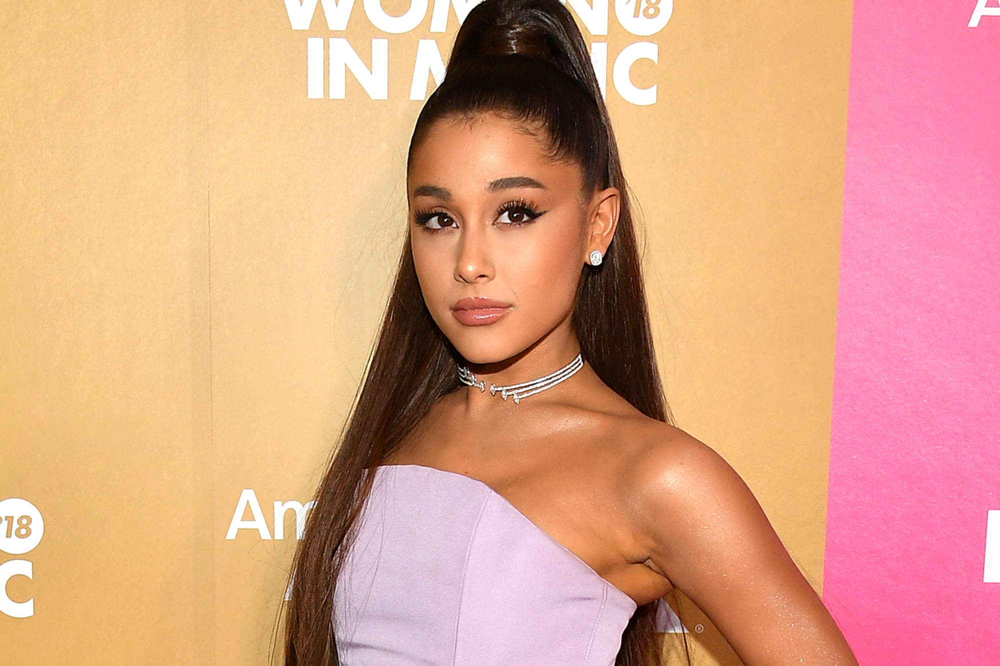

Music
"Music, one admitted to the soul, becomes a sort of the spirit and never dies." - Edward Bulwer-Lytton
I believe anyone's life can be changed by music. Therefore, here are some artists who have influenced my life through their music. To hear their songs, check out their youtube channels linked below the images!
- Halsey 
- Ashley
- Graveyard
- Forever...(is a long time)
- I HATE EVERYBODY
- Without Me
- Alanis' Interlude
- SUGA's Interlude
- Still Learning
- clementine
- You Should Be Sad
- Dominic's Interlude
- 3am
- Finally // beautiful stranger
- killing boys
- More
- 929
- Lauv
- I Like Me Better
- Comfortable
- The Other
- The Story Never Ends
- Come Back Home
- Easy Love
- Chasing Fire
- Bracelet
- Never Not
- Paris in the Rain
- Paranoid
- Reforget
- Enemies
- Question
- Adrenaline
- Breathe
- Getting Over You
- Ariana Grande 
- raindrops (an angel cried)
- the light is coming
- God is a woman
- successful
- breathin
- borderline
- goodnight n go
- get well soon
- blazed
- R.E.M
- sweetener
- everytime
- No Tears Left to Cry
- better off
- pete davidson
- Blackpink
- How You Like That
- Ice Cream (with Selena Gomez)
- Pretty Savage
- Bet You Wanna (with Cardi B)
- Lovesick Girls
- Crazy Over You
- Love To Hate Me
- You Never Know
- BTS
- Life Goes On
- Fly to My Room
- Blue & Grey
- Skit
- Telepathy
- Dis-ease
- Stay
- Dynamite
Favorite album: Manic (16 tracks)
Halsey's official youtube channel
Favorite album: I Met You When I Was 18 (17 tracks)
Lauv's official youtube channel
Favorite album: Sweetener (15 tracks)
Ariana Grande's official youtube channel
Favorite album: The Album (8 tracks)
Blackpink's official youtube channel
Favorite album: BE (8 tracks)